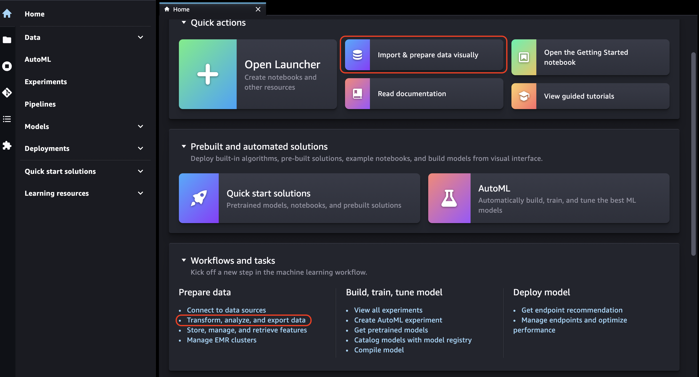
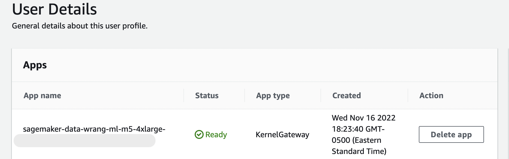
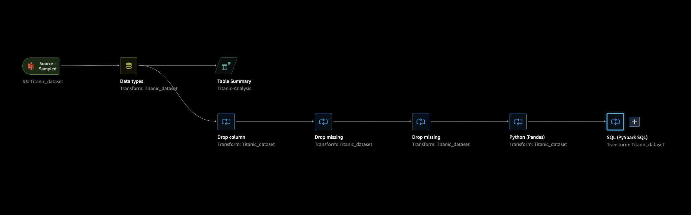

Get Started with Data Wrangler
Amazon SageMaker Data Wrangler is a feature in Amazon SageMaker Studio. Use this section to learn how to access and get started using Data Wrangler. Do the following:
-
Complete each step in Prerequisites.
-
Follow the procedure in Access Data Wrangler to start using Data Wrangler.
Prerequisites
To use Data Wrangler, you must complete the following prerequisites.
-
To use Data Wrangler, you need access to an Amazon Elastic Compute Cloud (Amazon EC2) instance. For more information about the Amazon EC2 instances that you can use, see Instances. To learn how to view your quotas and, if necessary, request a quota increase, see AWS service quotas.
-
Configure the required permissions described in Security and Permissions.
-
If your organization is using a firewall that blocks internet traffic, you must have access to the following URLs:
-
https://ui.prod-1.data-wrangler.sagemaker.aws/ -
https://ui.prod-2.data-wrangler.sagemaker.aws/ -
https://ui.prod-3.data-wrangler.sagemaker.aws/ -
https://ui.prod-4.data-wrangler.sagemaker.aws/
-
To use Data Wrangler, you need an active Studio instance. To learn how to launch a new instance, see Onboard to Amazon SageMaker Domain. When your Studio instance is Ready, use the instructions in Access Data Wrangler.
Access Data Wrangler
The following procedure assumes you have completed the Prerequisites.
To access Data Wrangler in Studio, do the following.
-
Sign in to Studio. For more information, see Onboard to Amazon SageMaker Domain.
-
Choose Studio.
-
Choose Launch app.
-
From the dropdown list, select Studio.
-
Choose the Home icon.
-
Choose Data.
-
Choose Data Wrangler.
-
You can also create a Data Wrangler flow by doing the following.
-
In the top navigation bar, select File.
-
Select New.
-
Select Data Wrangler Flow.
 -
-
(Optional) Rename the new directory and the .flow file.
-
When you create a new .flow file in Studio, you might see a carousel that introduces you to Data Wrangler.
This may take a few minutes.
This messaging persists as long as the KernelGateway app on your User Details page is Pending. To see the status of this app, in the SageMaker console on the Amazon SageMaker Studio page, select the name of the user you are using to access Studio. On the User Details page, you see a KernelGateway app under Apps. Wait until this app status is Ready to start using Data Wrangler. This can take around 5 minutes the first time you launch Data Wrangler.
 -
To get started, choose a data source and use it to import a dataset. See Import to learn more.
When you import a dataset, it appears in your data flow. To learn more, see Create and Use a Data Wrangler Flow.
-
After you import a dataset, Data Wrangler automatically infers the type of data in each column. Choose + next to the Data types step and select Edit data types.
Important
After you add transforms to the Data types step, you cannot bulk-update column types using Update types.
-
Use the data flow to add transforms and analyses. To learn more see Transform Data and Analyze and Visualize.
-
To export a complete data flow, choose Export and choose an export option. To learn more, see Export.
-
Finally, choose the Components and registries icon, and select Data Wrangler from the dropdown list to see all the .flow files that you've created. You can use this menu to find and move between data flows.
After you have launched Data Wrangler, you can use the following section to walk through how you might use Data Wrangler to create an ML data prep flow.
Update Data Wrangler
We recommend that you periodically update the Data Wrangler Studio app to access the latest features and updates. The Data Wrangler app name starts with sagemaker-data-wrang. To learn how to update a Studio app, see Shut down and Update Studio Apps.
Demo: Data Wrangler Titanic Dataset Walkthrough
The following sections provide a walkthrough to help you get started using Data Wrangler. This
walkthrough assumes that you have already followed the steps in Access Data Wrangler and have a new data flow file
open that you intend to use for the demo. You may want to rename this .flow file to
something similar to titanic-demo.flow.
This walkthrough uses the Titanic dataset
In this tutorial, you perform the following steps.
-
Do one of the following:
-
Open your Data Wrangler flow and choose Use Sample Dataset.
-
Upload the Titanic dataset
to Amazon Simple Storage Service (Amazon S3), and then import this dataset into Data Wrangler.
-
-
Analyze this dataset using Data Wrangler analyses.
-
Define a data flow using Data Wrangler data transforms.
-
Export your flow to a Jupyter Notebook that you can use to create a Data Wrangler job.
-
Process your data, and kick off a SageMaker training job to train a XGBoost Binary Classifier.
Upload Dataset to S3 and Import
To get started, you can use one of the following methods to import the Titanic dataset into Data Wrangler:
-
Importing the dataset directly from the Data Wrangler flow
-
Uploading the dataset to Amazon S3 and then importing it into Data Wrangler
To import the dataset directly into Data Wrangler, open the flow and choose Use Sample Dataset.
Uploading the dataset to Amazon S3 and importing it into Data Wrangler is closer to the experience you have importing your own data. The following information tells you how to upload your dataset and import it.
Before you start importing the data into Data Wrangler, download the Titanic dataset
If you are a new user of Amazon S3, you can do this using drag and drop in the Amazon S3 console. To learn how, see Uploading Files and Folders by Using Drag and Drop in the Amazon Simple Storage Service User Guide.
Important
Upload your dataset to an S3 bucket in the same AWS Region you want to use to complete this demo.
When your dataset has been successfully uploaded to Amazon S3, you can import it into Data Wrangler.
Import the Titanic dataset to Data Wrangler
-
Choose the Import data button in your Data flow tab or choose the Import tab.
-
Select Amazon S3.
-
Use the Import a dataset from S3 table to find the bucket to which you added the Titanic dataset. Choose the Titanic dataset CSV file to open the Details pane.
-
Under Details, the File type should be CSV. Check First row is header to specify that the first row of the dataset is a header. You can also name the dataset something more friendly, such as
Titanic-train. -
Choose the Import button.
When your dataset is imported into Data Wrangler, it appears in your Data Flow tab. You can double click on a node to enter the node detail view, which allows you to add transformations or analysis. You can use the plus icon for a quick access to the navigation. In the next section, you use this data flow to add analysis and transform steps.
Data Flow
In the data flow section, the only steps in the data flow are your recently imported dataset and a Data type step. After applying transformations, you can come back to this tab and see what the data flow looks like. Now, add some basic transformations under the Prepare and Analyze tabs.
Prepare and Visualize
Data Wrangler has built-in transformations and visualizations that you can use to analyze, clean, and transform your data.
The Data tab of the node detail view lists all built-in transformations in the right panel, which also contains an area in which you can add custom transformations. The following use case showcases how to use these transformations.
To get information that might help you with data exploration and feature engineering, create a data quality and insights report. The information from the report can help you clean and process your data. It gives you information such as the number of missing values and the number of outliers. If you have issues with your data, such as target leakage or imbalance, the insights report can bring those issues to your attention. For more information about creating a report, see Get Insights On Data and Data Quality.
Data Exploration
First, create a table summary of the data using an analysis. Do the following:
-
Choose the + next to the Data type step in your data flow and select Add analysis.
-
In the Analysis area, select Table summary from the dropdown list.
-
Give the table summary a Name.
-
Select Preview to preview the table that will be created.
-
Choose Save to save it to your data flow. It appears under All Analyses.
Using the statistics you see, you can make observations similar to the following about this dataset:
-
Fare average (mean) is around $33, while the max is over $500. This column likely has outliers.
-
This dataset uses ? to indicate missing values. A number of columns have missing values: cabin, embarked, and home.dest
-
The age category is missing over 250 values.
Next, clean your data using the insights gained from these stats.
Drop Unused Columns
Using the analysis from the previous section, clean up the dataset to prepare it for training. To add a new transform to your data flow, choose + next to the Data type step in your data flow and choose Add transform.
First, drop columns that you don't want to use for training. You can use
pandas
Use the following procedure to drop the unused columns.
To drop the unused columns.
-
Open the Data Wrangler flow.
-
There are two nodes in your Data Wrangler flow. Choose the + to the right of the Data types node.
-
Choose Add transform.
-
In the All steps column, choose Add step.
-
In the Standard transform list, choose Manage Columns. The standard transformations are ready-made, built-in transformations. Make sure that Drop column is selected.
-
Under Columns to drop, check the following column names:
-
cabin
-
ticket
-
name
-
sibsp
-
parch
-
home.dest
-
boat
-
body
-
-
Choose Preview.
-
Verify that the columns have been dropped, then choose Add.
To do this using pandas, follow these steps.
-
In the All steps column, choose Add step.
-
In the Custom transform list, choose Custom transform.
-
Provide a name for your transformation, and choose Python (Pandas) from the dropdown list.
-
Enter the following Python script in the code box.
cols = ['name', 'ticket', 'cabin', 'sibsp', 'parch', 'home.dest','boat', 'body'] df = df.drop(cols, axis=1) -
Choose Preview to preview the change, and then choose Add to add the transformation.
Clean up Missing Values
Now, clean up missing values. You can do this with the Handling missing values transform group.
A number of columns have missing values. Of the remaining columns, age and fare contain missing values. Inspect this using a Custom Transform.
Using the Python (Pandas) option, use the following to quickly review the number of entries in each column:
df.info()
To drop rows with missing values in the age category, do the following:
-
Choose Handle missing.
-
Choose Drop missing for the Transformer.
-
Choose age for the Input column.
-
Choose Preview to see the new data frame, and then choose Add to add the transform to your flow.
-
Repeat the same process for fare.
You can use df.info() in the Custom
transform section to confirm that all rows now have 1,045
values.
Custom Pandas: Encode
Try flat encoding using Pandas. Encoding categorical data is the process
of creating a numerical representation for categories. For example, if your
categories are Dog and Cat, you may encode this
information into two vectors: [1,0] to represent
Dog, and [0,1] to represent
Cat.
-
In the Custom Transform section, choose Python (Pandas) from the dropdown list.
-
Enter the following in the code box.
import pandas as pd dummies = [] cols = ['pclass','sex','embarked'] for col in cols: dummies.append(pd.get_dummies(df[col])) encoded = pd.concat(dummies, axis=1) df = pd.concat((df, encoded),axis=1) -
Choose Preview to preview the change. The encoded version of each column is added to the dataset.
-
Choose Add to add the transformation.
Custom SQL: SELECT Columns
Now, select the columns you want to keep using SQL. For this demo, select the
columns listed in the following SELECT statement. Because survived is your target column for training, put
that column first.
-
In the Custom Transform section, select SQL (PySpark SQL) from the dropdown list.
-
Enter the following in the code box.
SELECT survived, age, fare, 1, 2, 3, female, male, C, Q, S FROM df; -
Choose Preview to preview the change. The columns listed in your
SELECTstatement are the only remaining columns. -
Choose Add to add the transformation.
Export to a Data Wrangler Notebook
When you've finished creating a data flow, you have a number of export options. The following section explains how to export to a Data Wrangler job notebook. A Data Wrangler job is used to process your data using the steps defined in your data flow. To learn more about all export options, see Export.
Export to Data Wrangler Job Notebook
When you export your data flow using a Data Wrangler job, the process automatically creates a Jupyter Notebook. This notebook automatically opens in your Studio instance and is configured to run a SageMaker processing job to run your Data Wrangler data flow, which is referred to as a Data Wrangler job.
-
Save your data flow. Select File and then select Save Data Wrangler Flow.
-
Back to the Data Flow tab, select the last step in your data flow (SQL), then choose the + to open the navigation.
-
Choose Export, and Amazon S3 (via Jupyter Notebook). This opens a Jupyter Notebook.
 -
Choose any Python 3 (Data Science) kernel for the Kernel.
-
When the kernel starts, run the cells in the notebook book until Kick off SageMaker Training Job (Optional).
-
Optionally, you can run the cells in Kick off SageMaker Training Job (Optional) if you want to create a SageMaker training job to train an XGBoost classifier. You can find the cost to run a SageMaker training job in Amazon SageMaker Pricing
. Alternatively, you can add the code blocks found in Training XGBoost Classifier to the notebook and run them to use the XGBoost
open source library to train an XGBoost classifier. -
Uncomment and run the cell under Cleanup and run it to revert the SageMaker Python SDK to its original version.
You can monitor your Data Wrangler job status in the SageMaker console in the Processing tab. Additionally, you can monitor your Data Wrangler job using Amazon CloudWatch. For additional information, see Monitor Amazon SageMaker Processing Jobs with CloudWatch Logs and Metrics.
If you kicked off a training job, you can monitor its status using the SageMaker console under Training jobs in the Training section.
Training XGBoost Classifier
You can train an XGBoost Binary Classifier using either a Jupyter notebook or a Amazon SageMaker Autopilot. You can use Autopilot to automatically train and tune models on the data that you've transformed directly from your Data Wrangler flow. For information about Autopilot, see Automatically Train Models on Your Data Flow.
In the same notebook that kicked off the Data Wrangler job, you can pull the data and train an XGBoost Binary Classifier using the prepared data with minimal data preparation.
-
First, upgrade necessary modules using
pipand remove the _SUCCESS file (this last file is problematic when usingawswrangler).! pip install --upgrade awscli awswrangler boto sklearn ! aws s3 rm {output_path} --recursive --exclude "*" --include "*_SUCCESS*" -
Read the data from Amazon S3. You can use
awswranglerto recursively read all the CSV files in the S3 prefix. The data is then split into features and labels. The label is the first column of the dataframe.import awswrangler as wr df = wr.s3.read_csv(path=output_path, dataset=True) X, y = df.iloc[:,:-1],df.iloc[:,-1]-
Finally, create DMatrices (the XGBoost primitive structure for data) and do cross-validation using the XGBoost binary classification.
import xgboost as xgb dmatrix = xgb.DMatrix(data=X, label=y) params = {"objective":"binary:logistic",'learning_rate': 0.1, 'max_depth': 5, 'alpha': 10} xgb.cv( dtrain=dmatrix, params=params, nfold=3, num_boost_round=50, early_stopping_rounds=10, metrics="rmse", as_pandas=True, seed=123)
-
Shut down Data Wrangler
When you are finished using Data Wrangler, we recommend that you shut down the instance it runs on to avoid incurring additional charges. To learn how to shut down the Data Wrangler app and associated instance, see Shut Down Data Wrangler.